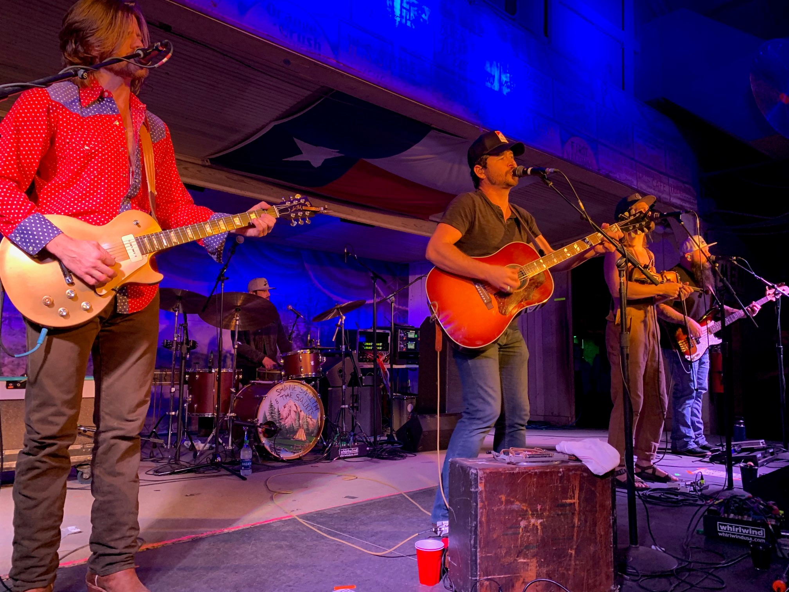

In our free time we enjoy traveling and concerts. In our free time we enjoy traveling and concerts. Our goal is to eventually visit all 50 states. We are currently up to 27 states. We bought a camper early 2021 and enjoy trying new local campgrounds. We have some plans to take the camper on longer trips in 2022.
When researching to find a new place to visit, I found out Shane Smith & The Saints were playing at Gruene Hall. I did more research and found out that Gruene Hall is the oldest dance hall in Texas. The venue looked amazing online, so we decided to go. This was one of the best decisions we made. Gruene, TX is centered about 1 hour South of Austin and 1 hour North of San Antonio. We have been to Gruene many times now and explored Hill Country. The town is full of quaint unique shops with some of the best restaurants we have been to. Everyone in Gruene is always so friendly. Visiting Gruene genuinely makes me happy every time we go.

Shane Smith & The Saints is a band from Austin, Texas. We originally saw them as an opener, and I had a better time listening to them than the headliner. After that show I was hooked. We have been to Gruene to see The Saints 3 times now. We have also watched them locally 2 times. While the albums are great, their live show is unbeatable. Their harmonies, Shane’s voice, and overall energy make them so unique. They produce unique concert posters for each show which I have began to collect. They are still a small enough band that have been able to meet Shane and get the posters signed. I cannot wait for the next show to hear some of their new music.
Here is a list of some of our upcoming trips. We are excited to visit some new places and repeat visits to others.
| State | When | Where |
|---|---|---|
| Texas | December 2021 | Gruene |
| Florida | February 2022 | Disney World |
| Arkansas | April 2022 | Crater of Diamonds State Park |
| Nevada | September 2022 | Las Vegas |